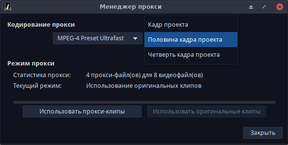
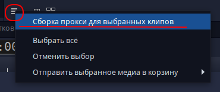

Редактирование прокси — это метод редактирования, в котором оригинальные медиаклипы представлены на монтажном столе прокси-клипами.
Обоснование
Прокси-клипы, используемые при редактировании прокси, обычно имеют меньшую скорость передачи данных и потребляют меньше ресурсов процессора для декодирования. Для редактирования с использованием прокси есть две основные причины:
- Исходный носитель, с которого выполняется редактирование, предъявляет слишком высокие требования к пропускной способности диска или к мощности процессора для декодирования, что в целом, не позволяет обеспечить комфортное редактирование.
- Оригинал хранится на сетевом сервере, медленном внешнем диске или другом носителе с ограниченным доступом и не позволяет обеспечить комфортное редактирование при прямом доступе.
Общий процесс редактирования с использованием прокси
Все рабочие процессы редактирования с использованием прокси имеют одни и те же этапы:
- Сборка прокси из оригинальных клипов
- Замена оригинальных клипов на прокси
- Редактирование с использованием прокси
- Замена прокси на оригинальные клипы
- Финальная сборка с использованием оригинальных клипов
Редактирование прокси во Flowblade
- Включение режима «Использование прокси-клипов»
- В главном меню выберите «Проект»→«Менеджер прокси».
- В открывшемся окне задайте параметры для прокси в области «Кодирование прокси». 
- Нажмите кнопку «Использовать прокси-клипы».
- Создание прокси-клипа
- Выберите клип во вкладке «Медиа» и нажав на него правой кнопкой мыши выберите «Собрать прокси».
- Или выберите несколько клипов во вкладке «Медиа» и с помощью кнопки выпадающего меню вкладки «Медиа» выберите «Сборка прокси для выбранных клипов». 
- Если проект уже находится в режиме прокси «Использование прокси-клипов» оригинальные клипы на монтажном столе, на которых были собраны прокси, будут заменены прокси-клипами.
- Редактирование с использованием прокси-клипов
- Значок индикатора редактирования прокси во вкладке «Медиа» отображается в правом верхнем углу клипа.
- На монтажном столе, на прокси-клипах сверху расположена голубая полоса, указывающая на статус прокси.
- Если на монтажном столе создаётся новый клип использующий оригинальный медиафайл, то он немедленно будет заменён на прокси-клип.
- Проект может быть нормально сохранён и преобразован после загрузки, для использования оригинальных клипов.
- Включение режима «Использование оригинальных клипов»
- В главном меню выберите «Проект»→«Менеджер прокси».
- В открывшемся окне нажмите кнопку «Использовать оригинальные клипы».
Важные замечания о редактировании прокси во Flowblade
Flowblade использует технику программирования, которая изменяет пути, используемые элементами мультимедиа, чтобы указывать, либо на скрытые прокси-клипы, либо на оригинальные.
Переход от одного к другому осуществляется путём записи скрытого временного файла проекта на диск и замены путей при чтении проекта. Из-за этого любой утерянный оригинальный клип преобразуется из прокси в оригинальный медиафайл.